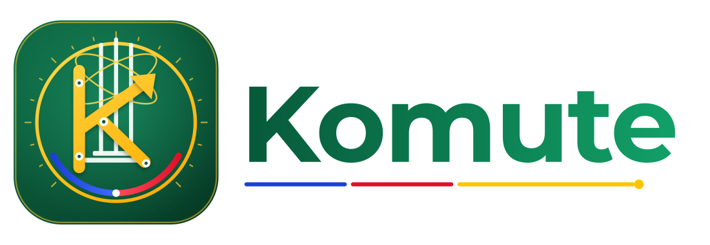

Last updated: November 28, 2026
By using Komute (komute.onrender.com or the Komute Android app) you agree to these terms.
Komute is a student project that suggests jeepney, bus, train and tricycle routes in Quezon City, with estimated fares and travel times.
Routes, fares and travel times are estimates and can be wrong or out of date. Check the signboard and ask the driver or conductor. Komute is not responsible for missed trips, delays, fare differences or any loss from relying on the estimates.
Each account gets a limited number of free route plans, and each device can use free plans with one account only. Unlimited plans can be bought for the price shown in the app. Payments are checked by reference number and are not refundable once unlocked, except where the law says otherwise.
Please do not abuse the service, try to get around the free-plan limits, or attack or overload the system. We may limit or close accounts that do.
The service is provided as is. It may be slow to start or unavailable at times, and features may change.